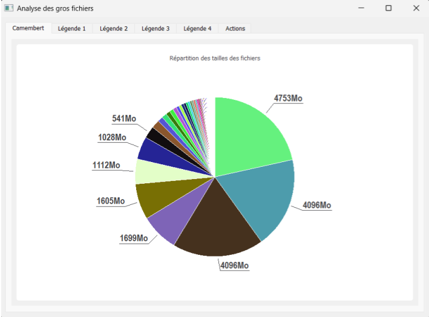
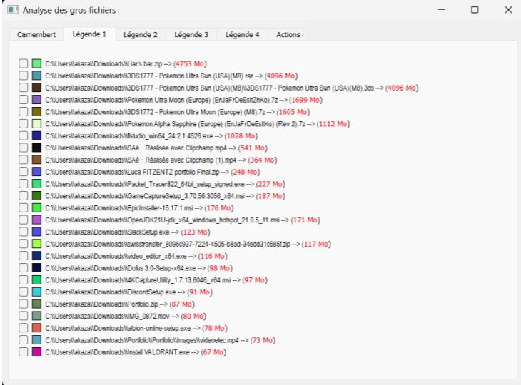
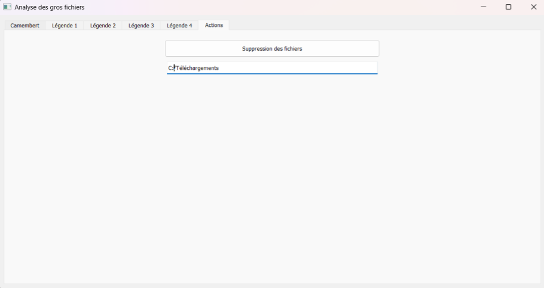

Dans le cadre de notre formation en Réseaux et Télécommunications, nous avons réalisé un projet technique intitulé SAE 105. Ce projet visait à concevoir un outil d'analyse permettant de repérer les fichiers les plus volumineux présents dans un dossier donné sur un ordinateur. Ce type d'outil est utile aux administrateurs système, notamment lorsqu'il s'agit de libérer rapidement de l'espace disque sur des postes utilisateurs ou des serveurs.
L'outil repose sur une série de scripts Python et PowerShell, avec une interface graphique interactive permettant de visualiser les fichiers détectés, de sélectionner ceux à supprimer et de générer automatiquement un script de suppression.
Ce projet nous a permis d'appliquer des compétences en :
Le programme débute par l'ouverture d'une fenêtre de sélection de dossier via PyQt5. Une fois le répertoire choisi, un script Python explore récursivement tous les fichiers du dossier et de ses sous-dossiers. Il établit une liste des fichiers les plus gros (jusqu'à 100), enregistre les données dans un fichier JSON, puis un autre script se charge de les afficher sous forme de graphique circulaire ("camembert").
Chaque portion du graphique correspond à un fichier. Des légendes avec cases à cocher permettent de sélectionner les fichiers à supprimer. En validant, un bouton génère un script PowerShell personnalisé qui effectue la suppression des fichiers cochés après confirmation.
L'outil est fonctionnel sur Windows et peut être adapté à Linux ou MacOS. Il permet une gestion simple des fichiers lourds et peut être utilisé dans un contexte professionnel pour l'administration de parc informatique. Le projet nous a permis de mieux comprendre les besoins d'un technicien système et de produire une solution concrète et utile.
Nous avons également appris à travailler en équipe, à gérer un projet de A à Z et à respecter des délais de livraison. Ce projet a été une expérience enrichissante qui nous a permis de mettre en pratique nos compétences techniques tout en développant notre sens de l'organisation et du travail collaboratif effectué avec mon binôme, Matthieux Dejoie.
Voici quelques images du projet en cours de réalisation : montages, tests et interfaces graphiques.
: Sélection du dossier dans l'interface graphique
 Résultat du camembert généré avec PyQt5.QtChart
 Script PowerShell généré automatiquement pour supprimer les fichiers]